library(readxl)
acreditados <- read_excel('acreditados.xlsx', sheet = 'datos')¿Cuántos laboratorios de ensayo acreditados por el INN hay en Chile? Versión 2023
Hace ya casi 2 años publiqué un post acerca de cuántos laboratorios de ensayos acreditados existían en Chile el 2021. La publicación generó airadas reacciones, sin embargo, se abrió un interesante debate (esa es la idea).
Es tiempo de actualizar ese análisis con los datos de 2023. En esta oportunidad llevaremos a cabo el análisis paso a paso en R bajo el concepto de Reproducible Research
Nota: Considerar que algunas razones sociales podrían tener varios laboratorios/alcances acreditados, por lo tanto, este gráfico en realidad cuenta el número de acreditaciones. (¿Clickbait?)
La versión de este post es semi-automática, es decir, algunas operaciones serán hechas a mano. Podríamos aplicar web scraping y bajar los datos directamente desde la página web del INN, pero eso qudará para otro post (lo intuye bien querid@ lector@… cuando yo aprenda a hacerlo.)
¿Dónde están los datos de laboratorios acreditados por el INN?
Bueno, lo primero es dirigirnos al siguiente link para bajar los datos desde la página del INN (son datos públicos por si acaso):
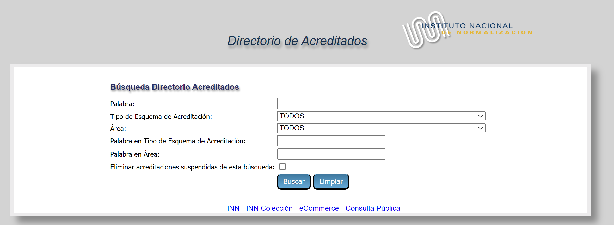
En el campo Tipo de ESquema de Acreditación seleccionamos Laboratorios de ensayo:
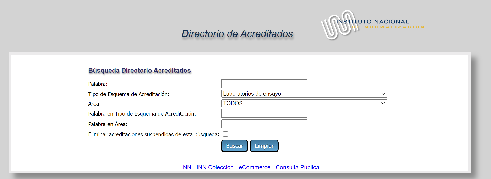
Presionamos Buscar y obtenderemos el listado completo (incluyendo los laboratorios suspendidos):
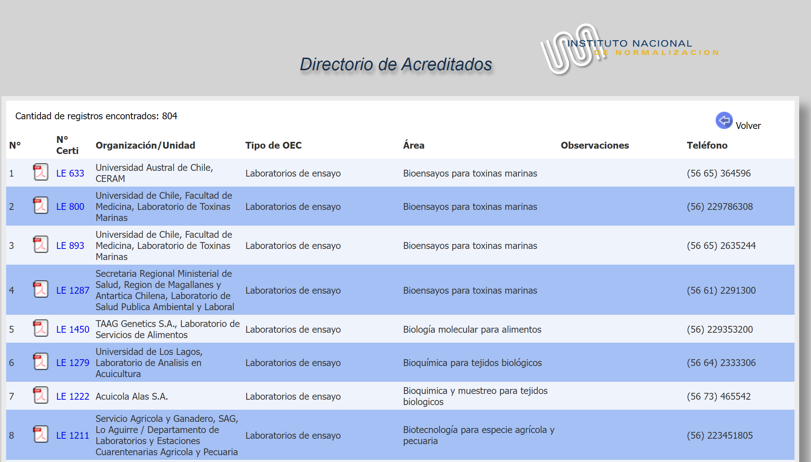
Lamentablemente, el sitio no tiene ninguna opción para bajar los datos en Excel u otro formato, así que tendremos que hacerlo a la antigua:
- Botón derecho y se abrirá el siguiente menú:
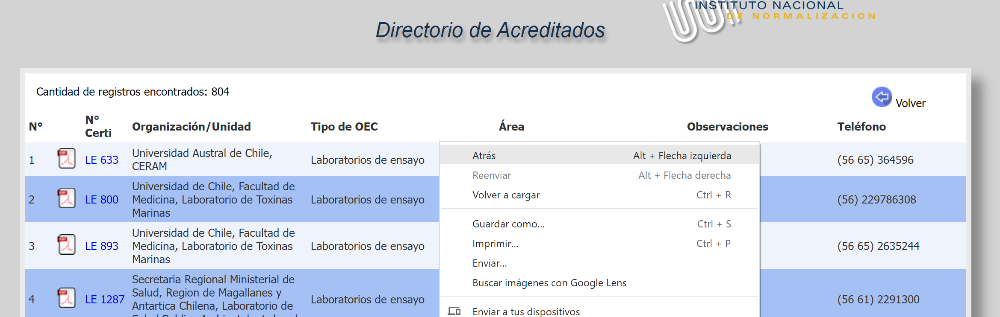
- Elija Guardar Como y en tipo seleccione Página web (completa) y guárdelo con el nombre acreditados.html (el nombre da igual)
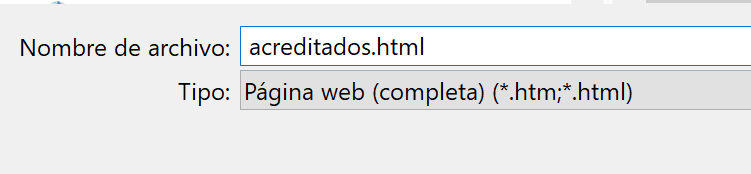
Listo, hemos bajado los datos y ahora debemos limpiarlos ya que incluso se descargaron los íconos de los certificado en pdf. Tenemos que dejar la tabla limpia para el análisis en R (o para cualquier otro software)
Limpieza de la base de datos en Excel
Haremos la limpieza de datos en Excel.
- Abra Excel
- Ahora abra el archivo archivados.html que guardó (sí, Excel puede abrir este tipo de archivos) y obtendrá algo similar a esto:
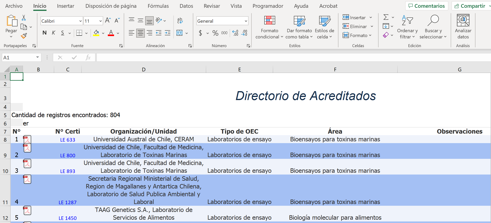
El objetivo es llegar a una hoja de Excel plana:
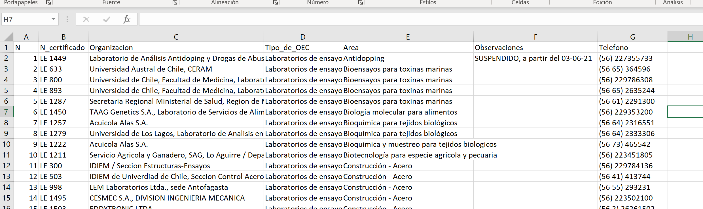
- Seleccionemos todos los datos inlcuyendo los encabezados de las columnas (N, N Certi, etc), copiar y pegar en una nueva hoja sólo como datos, es decir, nos ubicamos en la celda A1 de la hoja nueva, presionamos botón derecho y seleccionamos
Valores (V):
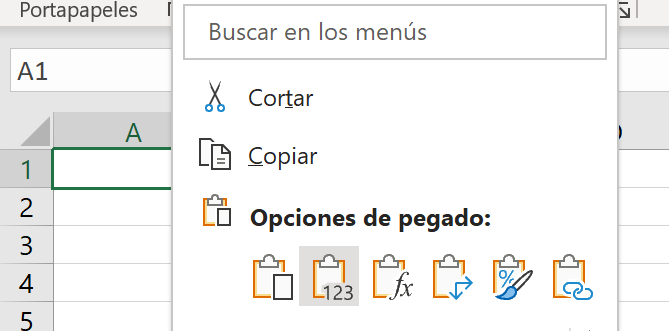
Y obtendremos lo siguiente:
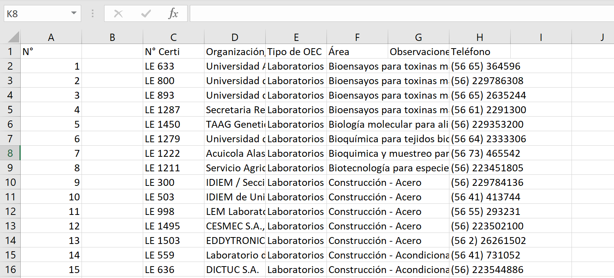
- Eliminamos la columna B:
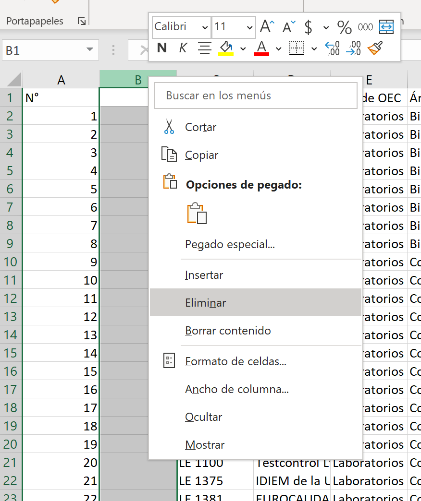
- Hemos obtenido la tabla que buscábamos:
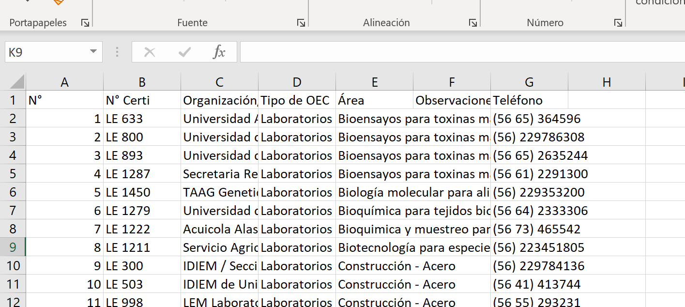
- Lo único que nos falta es modificar un poco los encabezados para eliminar acentos, espacios en blanco, etc. Para que Ud. pueda reproducir este análisis cambie los encabezados por los siguientes:
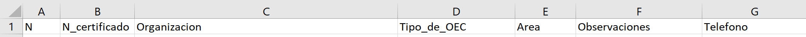
- ¡Listo! hemos limpiado la base de datos, la cual debe lucir más o menos así en el Excel:
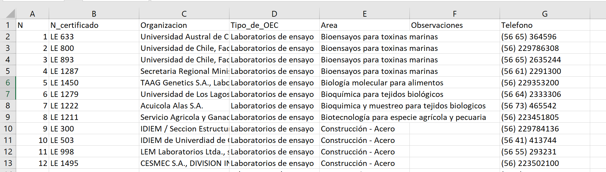
- Cambiemos el nombre la hoja a
datos:
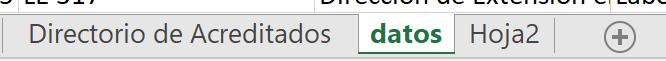
- Por último guardar el libro Excel con el nombre
acreditados.xlsx
Análisis estadístico en R
Abrimos el software RStudio y generamos un nuevo script:

Guardamos el script con el nombre acreditados.R en el mismo directorio que guardamos la base de datos limpia acreditados.xlsx
Los siguientes comandos importan la base de datos del INN desde el Excel hasta R:
La importación ha sido exitosa si observa la siguiente tabla con el comando head()
head(acreditados)# A tibble: 6 × 7
N N_certificado Organización Tipo_de_OEC Area Observaciones Telefono
<dbl> <chr> <chr> <chr> <chr> <chr> <chr>
1 1 LE 633 Universidad Aust… Laboratori… Bioe… <NA> (56 65)…
2 2 LE 800 Universidad de C… Laboratori… Bioe… <NA> (56) 22…
3 3 LE 893 Universidad de C… Laboratori… Bioe… <NA> (56 65)…
4 4 LE 1287 Secretaria Regio… Laboratori… Bioe… <NA> (56 61)…
5 5 LE 1450 TAAG Genetics S.… Laboratori… Biol… <NA> (56) 22…
6 6 LE 1279 Universidad de L… Laboratori… Bioq… <NA> (56 64)…Ahora haremos el gráfico de barras el cual indica el número de laboratorios de ensayo acreditados por el INN al 03 de julio de 2023 clasificados por Area. Por una cuestión de espacios sólo se muestran aquellas áreas con más de 10 laboratorios acreditados:
library(tidyverse)
library(readxl)
library(ggplot2)
library(magrittr)
acreditados <- read_excel('acreditados.xlsx', sheet = 'datos')
tabla <- acreditados %>%
group_by(Area) %>%
summarise(n = n())
# Número de acreditaciones suspendidas
n.suspendidos <- acreditados %>%
filter(!is.na(Observaciones)) %>%
count()
# Número de acreditaciones totales (incluyendo las suspendidas)
n.total <- acreditados %>%
count()
ggplot(tabla %>% filter(n >= 10), aes(x = reorder(Area, n), y = n, label = n)) +
geom_bar(stat = "identity", fill = 'blue', alpha = 0.7) +
ylab('N° de laboratorios de ensayo') +
xlab('Área') +
labs(title = paste('Acreditaciones en Chile por INN bajo ISO 17025 por área N =',
n.total),
subtitle = paste("Incluye ", n.suspendidos, "suspendidos. Sólo se muestran n > 10"),
caption = "Fuente: https://acreditacion.innonline.cl/") +
theme_bw() +
geom_text(size=5,hjust=1.5, col = 'white') +
coord_flip()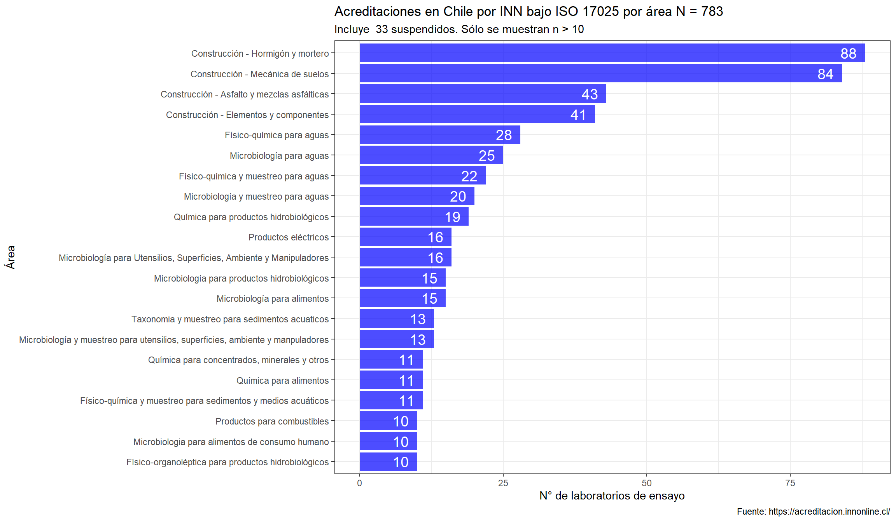
ggsave('barras.png')¡Listo! En un siguiente paso podríamos desagregar por Organización, de tal manera de atribuir las acreditaciones clasificando por razón social ¿Le parece estimad@ lector@?
Saludos